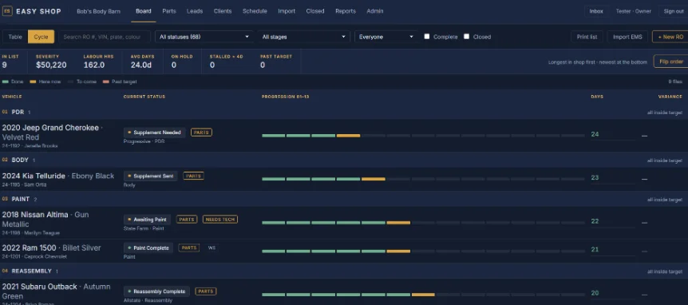

Included
The board is the shop
Every open file sits in its real stage — teardown, PDR, body, paint, reassembly, QC, ready. Drag a car forward and everyone who needs to know is told. This is the production management half of the system, and it is the screen most of the shop lives on.
- Collision, hail and combination shops each get their own lane and status set
- Lanes and statuses are yours to name and reorder
- Total losses sort to the top and turn red
- Filter to one technician, or to the cars with nobody on them
- Print exactly what is filtered on screen
